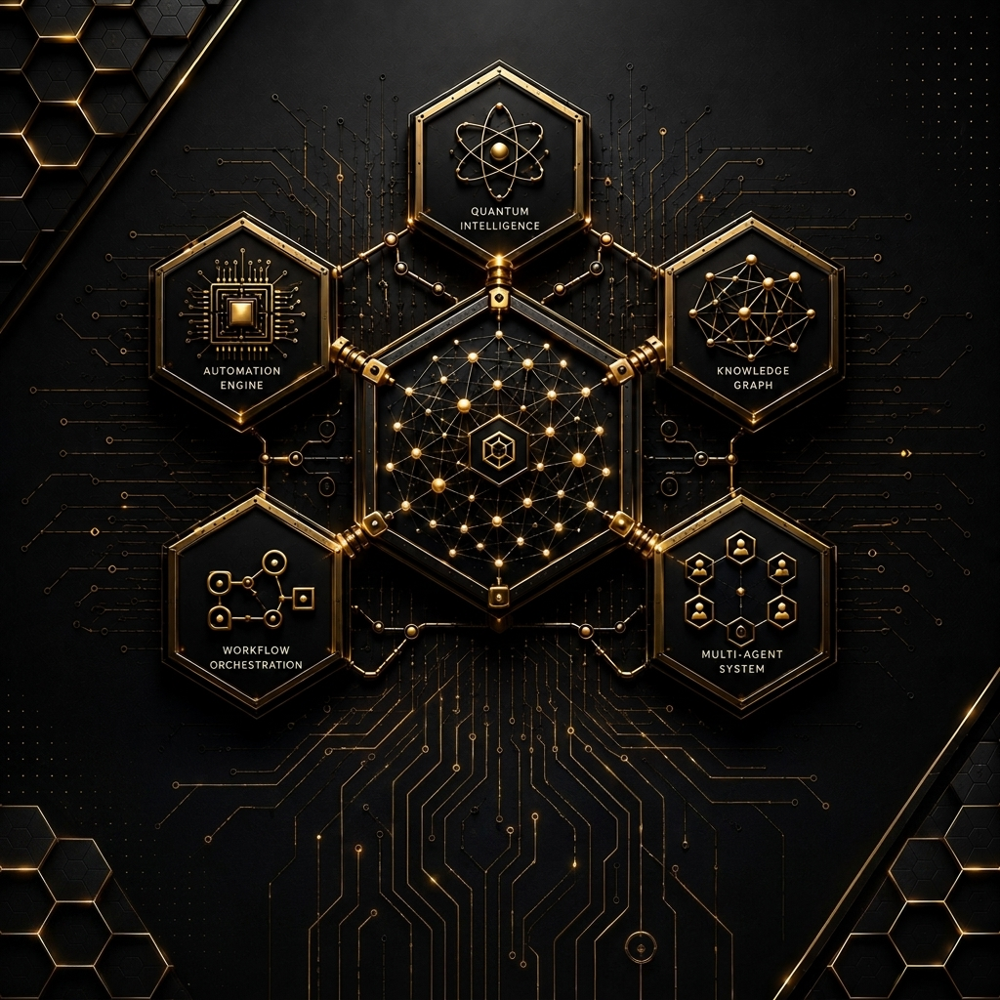
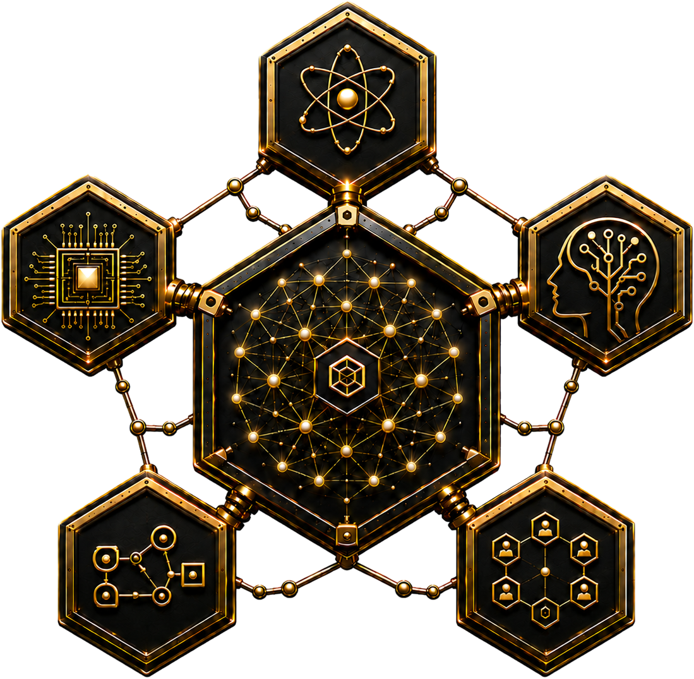
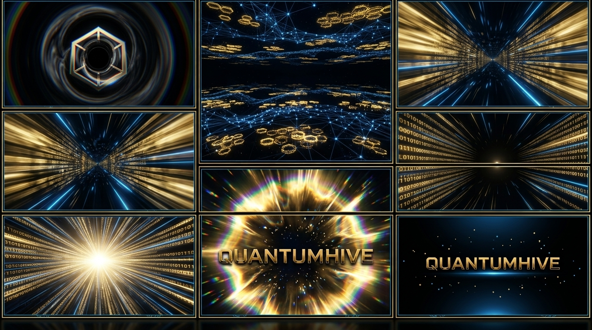
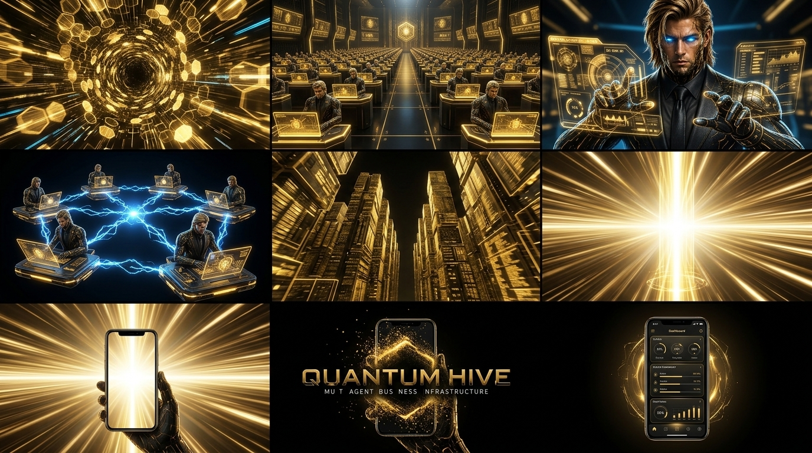
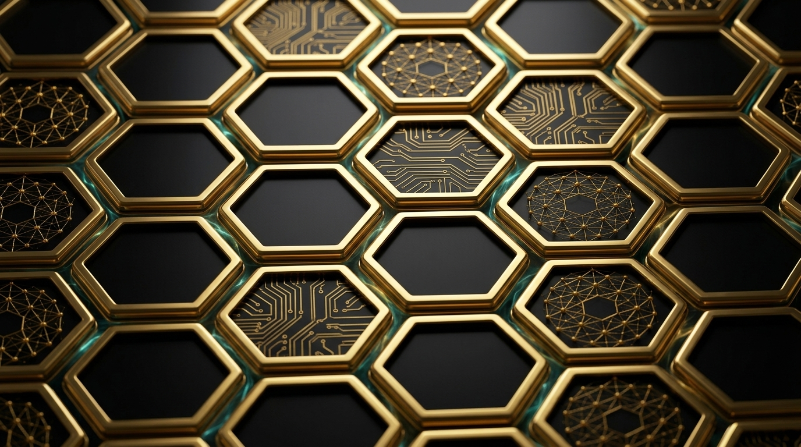
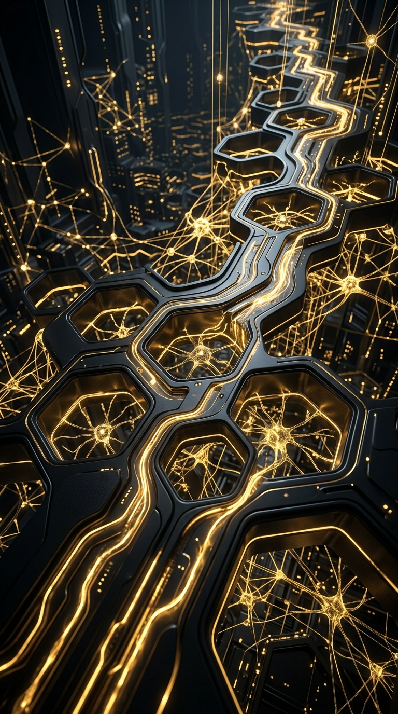
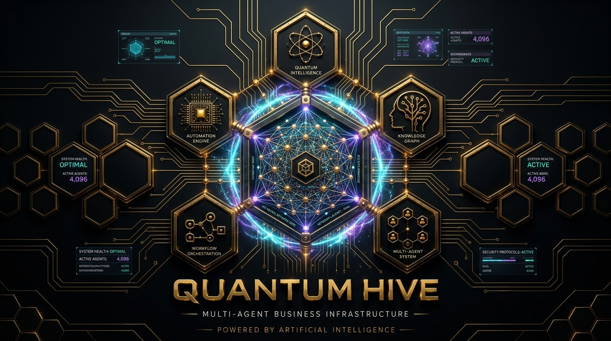
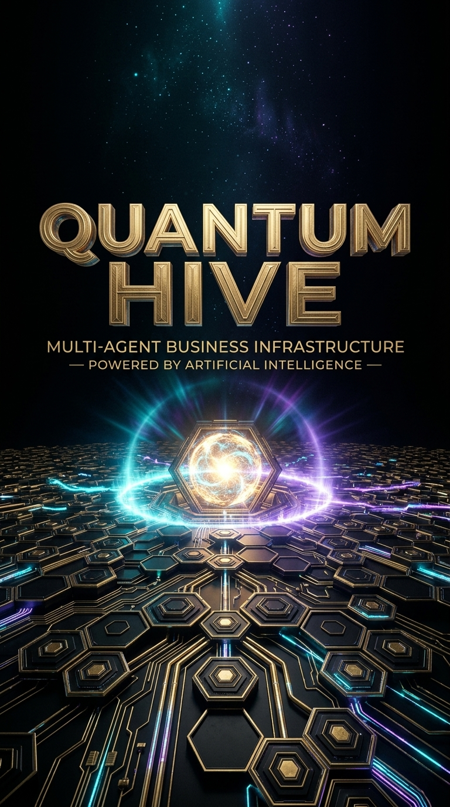

Quantum Intelligence
La parte visible puede hablar, mirar o habitar una interfaz. La parte no visible decide, conecta, ejecuta y sostiene el criterio de toda la experiencia.

QuantumHiveQuantumHive construye asistentes de IA humanizados con voz en tiempo real, vision en tiempo real, presencia avatar y arquitectura multiagente.

La parte visible puede hablar, mirar o habitar una interfaz. La parte no visible decide, conecta, ejecuta y sostiene el criterio de toda la experiencia.

Motor de automatizacion que ejecuta flujos complejos con precision y criterio.

Grafo de conocimiento vivo que conecta contexto, memoria y decision en tiempo real.

Orquestacion de flujos que coordina agentes, datos y acciones sin friccion.

Menos chat flotante. Mas sistema con identidad, criterio y capacidad de operar en el mundo real.
QuantumHive no se limita a responder texto. Construye una presencia capaz de conversar, observar, guiar, explicar y sostener una relacion mas rica entre empresa, interfaz y usuario.

Menos sintetico, mas cercano, mas memorable.

Lee escena, interfaz o situacion antes de responder.
No un truco visual. Una capa real de presencia de marca.
La misma capa de inteligencia puede convertirse en empleado virtual, interfaz comercial, operador asistido o presencia premium de marca sin perder coherencia.
Recepcion, ventas, soporte, guiado y seguimiento con una presencia mucho mas avanzada que un bot plano.

Sistemas que explican, convierten y sostienen conversaciones con identidad propia.

Agentes que ordenan, coordinan, activan flujos y conectan decision con ejecucion.
QuantumHive combina presencia humana, operacion en tiempo real y arquitectura aplicada para moverse donde la IA deja de ser promesa y empieza a parecer inevitable.
QuantumHive esta disenado para companias que quieren salir del modelo de interfaz vieja y entrar en una capa nueva de voz, vision, avatar y sistemas coordinados.